Exploring Chaos Without Writing a Single Line of Code
By Charles Xie ✉
Listen to a podcast about this article
This tutorial shows how iFlow can be used by students to discover chaos without writing a single line of code.
The logistic map
Let’s start with a very simple system that exhibits chaotic behavior: the logistic map, which is defined by the following recurrence relation:
where xₙ is a number within [0, 1] that represents the ratio of an existing population to the carrying capacity of the environment in the n-th year and r is a parameter within [0, 4]. The equation considers two factors: 1) reproduction in which the population will increase at a rate proportional to the current population and 2) starvation in which the growth rate will decrease at a rate proportional to the carrying capacity minus the current population.
Use iFlow to solve the problem
To investigate this dynamic system, you can use any programming language (or even use a calculator like Mitchell Feigenbaum did a few decades ago when making his initial discovery in chaos). But iFlow provides a unique visual environment that may make your discovery of chaos more fun. The following screenshots show a visual computational solution that produces the results of xₙ when r assumes different values.
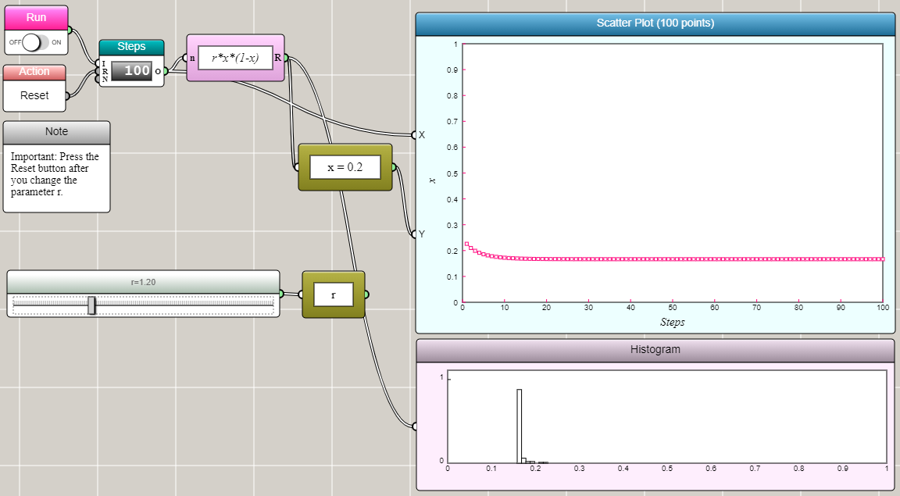
When r=1.2, x converges to one value.
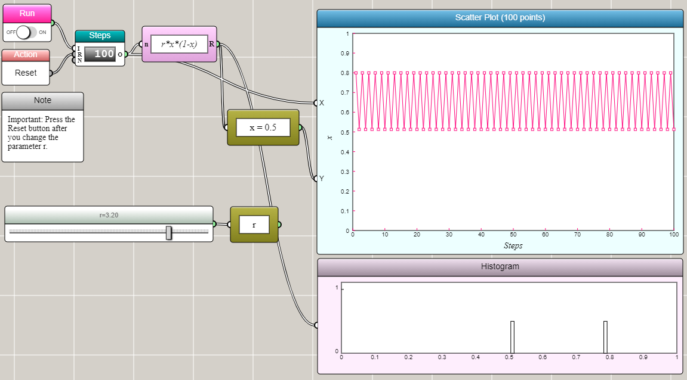
When r=3.2, x converges to two values.
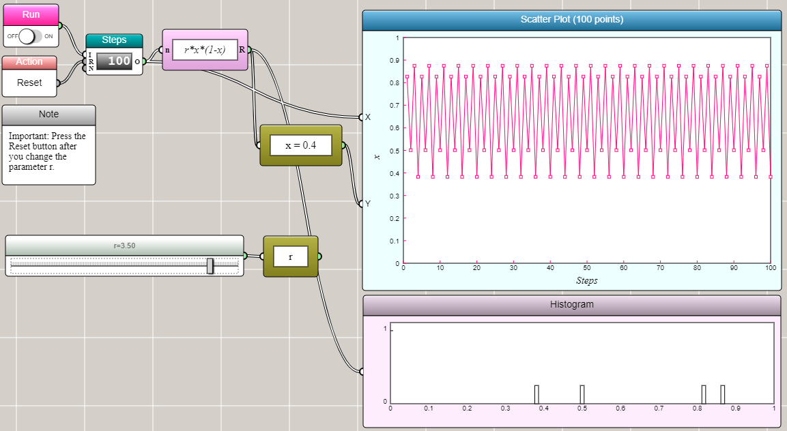
When r=3.5, x converges to four values.
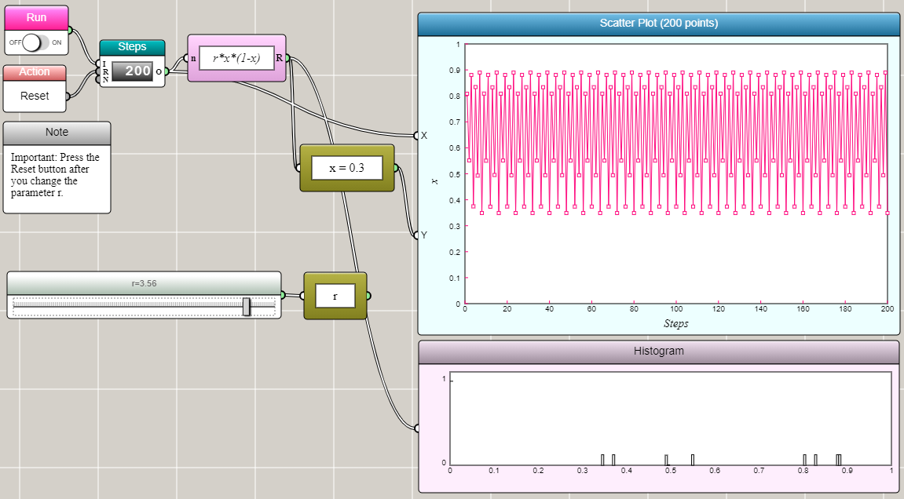
When r=3.56, x converges to eight values.
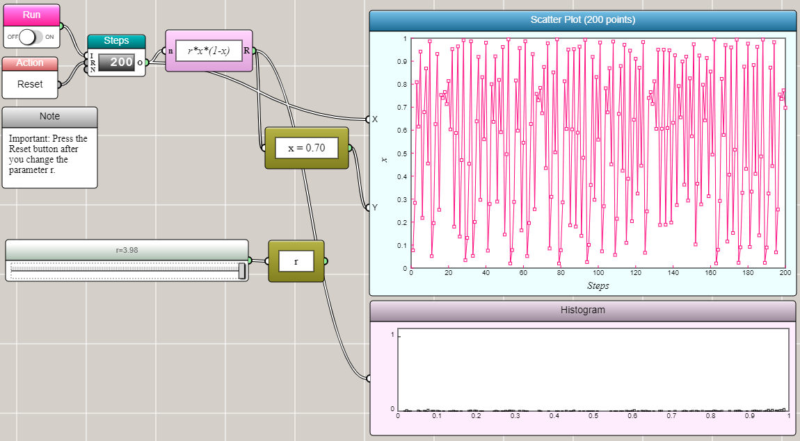
When r=3.98, x becomes chaotic.
Who would have thought that such a simple deterministic system exhibits such a complex behavior! The discovery of chaos reminds us how unpredictable Mother Nature actually is.
Click HERE to play with this computational experiment
Now let's see how you can create such a visual solution in iFlow by yourself.
Set up the recurrence relation
First, you need a block for defining the recurrence relation. Since there is only one variable x, you can use a Univariate Function block, which is available in the Operators & Functions row of the Blocks Palette shown as follows:
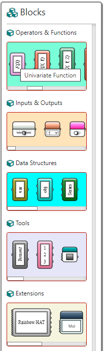
Once you drag and drop a Univariate Function block onto the canvas, you can select it and then press the Enter key on your keyboard to open a dialog window for typing the expression:
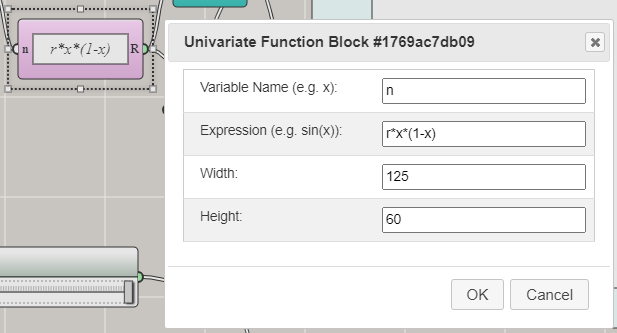
In this case, you can just type r*x*(1-x) in the Expression field. It is important to note that, in a recurrence relation, you need to reuse x outside the Univariate Function block. So x must be declared as a global variable. The Variable Name field in the above window defines a local variable limited within the scope of the block. Therefore, you cannot use x as the variable name. Instead, you can use n (or any other name that is not x or r — the two variables referenced in the expression). To define x as a global variable, you can use the Global Variable block from the Data Structures row of the Blocks Palette:
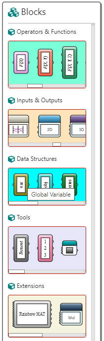
Once you drag and drop a Global Variable block onto the canvas, you can select it and then press Enter to open a dialog window for setting the variable:
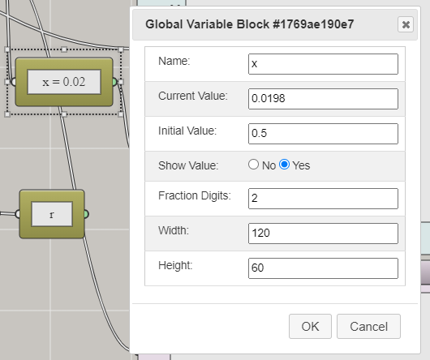
You need to type in the Name field the name of the variable, which is x in this case. You can set the initial value for the variable (0.5 in this case). You also need to define r as a global variable following the same steps.
Set up the graphs
We want to show the change of x as a function of n. For this purpose, you can use a Space2D block, which takes an input of two variables and use them as the Cartesian coordinates for a scatter plot. You can find Space2D in the Inputs & Outputs row of the Blocks Palette:
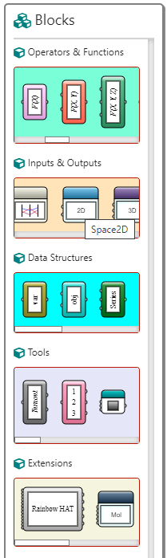
Once you drag and drop a Space2D block onto the canvas, you can select it and press Enter to open a dialog window for customizing it:
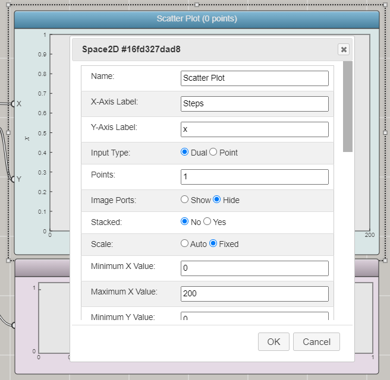
Since you have only n and x as the inputs, you can use the default input type ("Dual"). In this case, the Space2D block provides only two input ports. There are a lot of other properties that you can set for a Space2D block, such as color, width, and style for lines or color, size, and style for symbols.
To show how many values x actually converges to in the logistic map, it also helps to use a histogram to make that clear (otherwise you would have to examine all the x values in the output carefully to identify all the different values. The Histogram block can be found in the Inputs & Outputs row of the Blocks Palette:
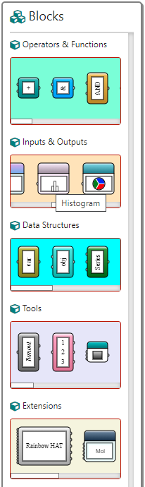
Once you drag and drop a Histogram block onto the canvas, you can select it and press Enter to open a dialog window for customizing it:
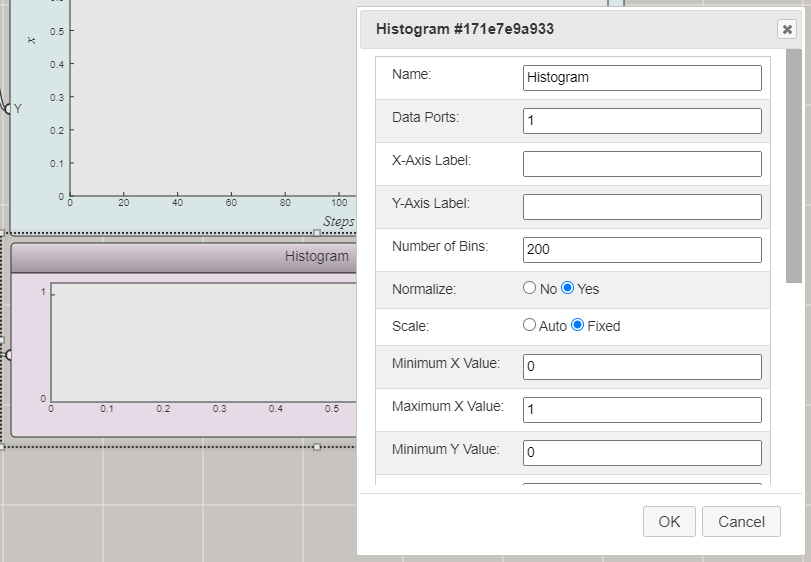
Since you only need the input from x (n is not needed), you can set the number of data ports to be 1.
Set up the iteration
Having a recurrence relation defined in a Univariate Function block does not produce any data. You need a Worker block to do the actual job of recurrence. Technically, a Worker starts a computational process, which in this case is to evaluate the recurrence expression iteratively. The Worker block can be found in the Tools row of the Blocks Palette:
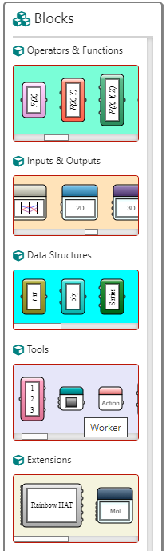
Once you drag and drop a Worker block onto the canvas, you can select it and press Enter to open a dialog window for setting it up:
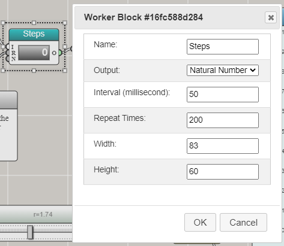
This window allows you to choose the output type. In this case, you can just use the default, which is Natural Number. You can set the interval at which the Worker will execute and the Repeat Times (how many steps it will run). A Worker will also need a toggle switch to turn it on and off, as you can see from this example. We will omit the steps for adding a Toggle Switch block as they are pretty straightforward.
Set up the controllers
You need a slider for changing r and a button for resetting the computation back to the initial condition. The Slider block can be found in the Inputs & Outputs row of the Blocks Palette:
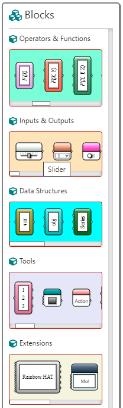
Once you drag and drop a Slider block onto the canvas, you can select it and press Enter to invoke a dialog window for setting it up:
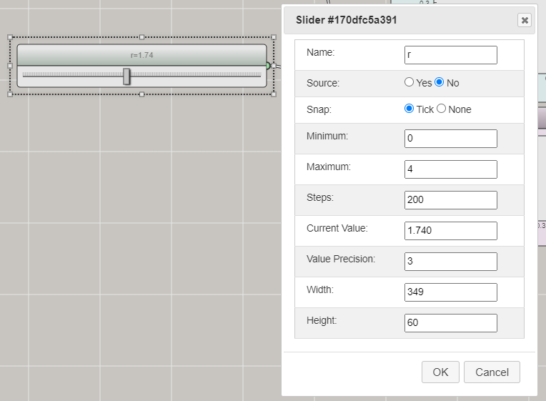
The Reset button is a special case. It can be done through the Action block, which can be found in the Tools row of the Blocks Palette:
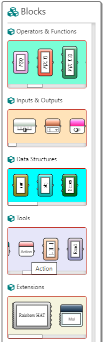
Once you drag and drop an Action block onto the canvas, you can select it and press Enter to open a dialog window that shows the available actions:
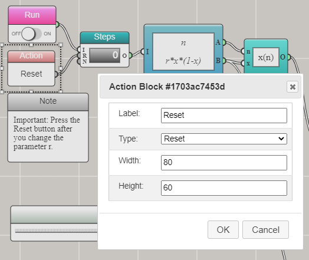
The default action is Reset.
Connect the blocks
You have added all the blocks needed to construct this computational experiment. Now you just need to put them together using some computational logic, shown as follows by the way in which the blocks are connected:
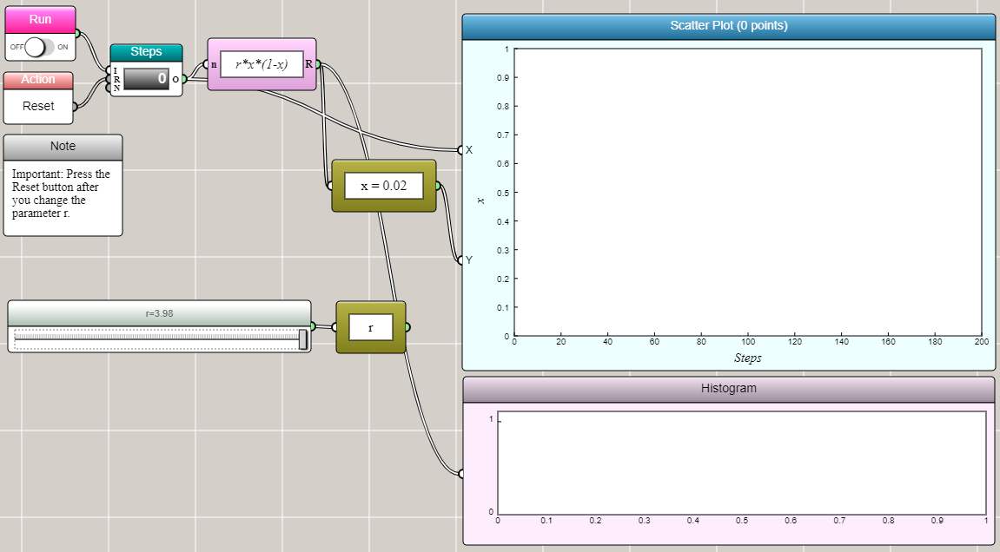
The natural number output from the Worker block is connected to the input port of the Univariate Function block to trigger the evaluation of the r*x*(1-x) expression at the frequency and times specified by the Worker. The output port of the Univariate Function block is connected to the input port of the Global Variable block to update the value of x. The output port of the Worker block and the output port of the Global Variable block are connected to the X and Y input ports of the Space2D block so that the incoming pair of data can be shown in a scatter plot. The output port of the Univariate Function block is also connected to the input port of the Histogram block so that the result can be aggregated in a histogram. The Slider block is linked to a Global Variable block to change the parameter r, which is critical to the onset of chaos.
Once the user turns on the Run switch, this iFlow diagram will produce an animation of the computational process and display the results in the graphs as we show above. The user can reset the diagram, change the parameter r, and then run the process again.
In this visual programming paradigm, you not only create a program to do some computation, but also build a flowchart-like graphical user interface for interacting with the computational process more easily. As seeing is believing, people may understand the computational concepts better in this way.